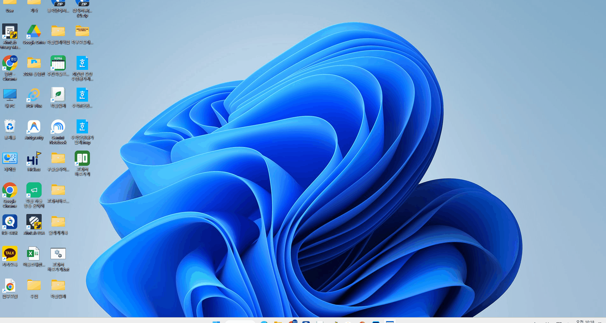
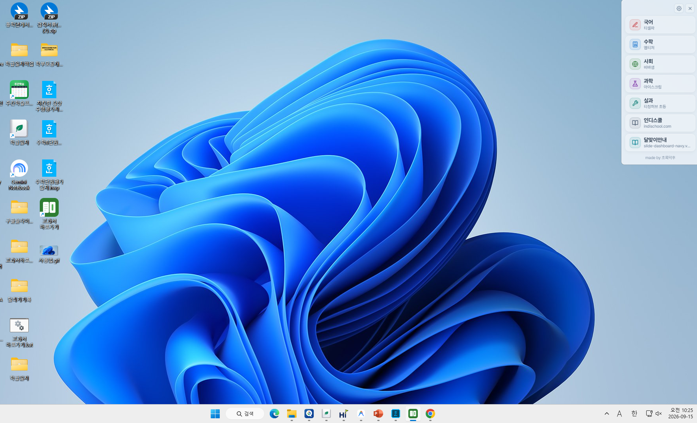
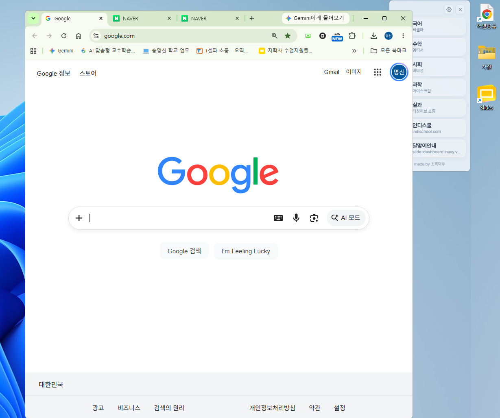
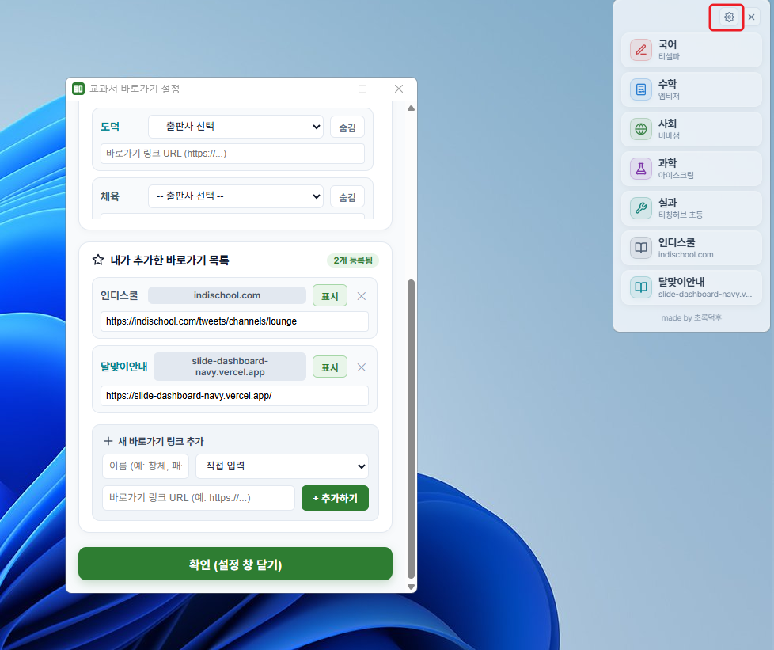

교과서 바로가기 VER 2 바탕화면 위젯
매번 즐겨찾기를 뒤적거리거나 교과서 사이트 주소를 검색할 필요가 없습니다.
선생님 컴퓨터 바탕화면 구석에 깔끔한 세로 독(Dock)으로 상주하여, 수업 중 필요한 과목 카드만 누르면 교과서가 시원하게 열립니다.
💡 VER 2는 무엇이 달라졌나요?
바탕화면 오른쪽이나 원하는 위치에 반투명한 세로 독으로 띄워둘 수 있습니다. 화면을 가리지 않고 마우스 클릭 한 번이면 교과서로 직행합니다.
작업표시줄에 프로그램 아이콘을 띄우지 않아 화면 아래쪽이 복잡해지지 않습니다. 수업 중 PPT, 한글, 동영상을 띄워도 조용히 바탕화면에 머뭅니다.
티셀파, 엠티처, 비바샘, 아이스크림 등 초등 주요 교과서 사이트가 기본 등록되어 있습니다. 톱니바퀴 버튼을 누르고 내 학년 출판사만 콕 찍어 선택하면 끝납니다.
아침에 교실 컴퓨터를 켜면 프로그램이 알아서 바탕화면에 조용히 대기합니다. 매번 번거롭게 프로그램을 찾아 실행할 필요가 없습니다.
🚀 이렇게 사용해요 (초간단 3단계)
상단의 다운로드 버튼을 눌러 구글 드라이브에서 교과서 바로가기.exe 파일을 내려받아 더블클릭합니다. 별도의 복잡한 설치 과정 없이 바로 켜집니다.
위젯 위쪽의 톱니바퀴 아이콘을 누르면 과목 설정 창이 열립니다. 국어, 수학, 사회, 과학 등 내가 가르치는 학년의 출판사를 고르거나 자주 가는 학교 사이트 링크를 추가합니다.
1교시 국어 수업이면 국어 카드 클릭, 2교시 수학이면 수학 카드 클릭! 기본 인터넷 브라우저로 해당 교과서 페이지가 바로 열립니다.
📸 실제 화면 미리보기
💡 이미지를 클릭하면 실제 크기로 시원하게 확대해서 보실 수 있습니다.




🔒 윈도우 실행 및 환경 안내
파일을 처음 실행할 때 파란색 'Windows의 PC 보호' 창이 나타날 수 있습니다.
이는 초등교사가 비영리로 직접 제작하여 비싼 기업용 디지털 서명 인증서를 등록하지 않아 발생하는 정상적인 윈도우 기본 알림입니다.
화면의 [추가 정보] → [실행] 버튼을 차례로 클릭해 주시면 정상 실행됩니다. (안전한 파일입니다 🌱)
위젯의 톱니바퀴 ⚙️ 설정 창 하단에 있는 '윈도우 시작 시 자동 실행'을 체크해 두시면, 매일 아침 컴퓨터가 켜질 때 위젯이 알아서 바탕화면에 나타납니다.
위젯의 카드를 누르면 선생님 컴퓨터에서 기본 브라우저로 지정된 프로그램(Chrome, Edge, Whale 등)의 새 탭으로 열립니다.